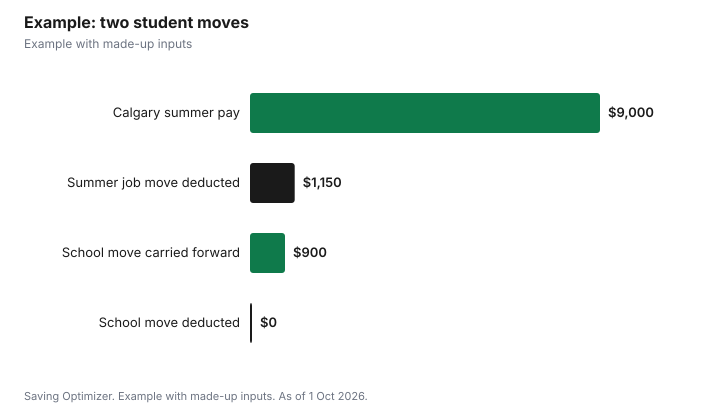

Education · Canada
Moving Expenses for Students (Line 21900): When You Can Actually Deduct Them
Students can deduct moving expenses on line 21900, but only against certain income. If you moved at least 40 kilometres closer to attend a post-secondary program full time, you can deduct the costs only from the taxable part of your scholarships, bursaries, fellowships, certain prizes and research grants. Since awards for full-time study are often fully tax-exempt, many students have nothing to deduct against. A move for a job works differently: if you moved for a summer job, a co-op placement or self-employment, you deduct the costs from the pay you earned at the new location. Unused amounts carry forward to later years against the same type of income.
Key takeaways
- You need full-time enrolment, shown in box C of your tuition form, to claim as a student.
- Your new home must be at least 40 km closer to the school or job, by the shortest public route.
- A move to school is deductible only from taxable scholarship, bursary and research grant income.
- A move for a summer job or co-op is deductible from employment income at the new location.
- Unused amounts carry forward to future years; they cannot be carried back.
- Example with made-up inputs: $1,150 of move costs against $9,000 of summer pay.
The two kinds of student moves
The CRA's guide for students says that if the form you got from your school has an amount in box C, for full-time enrolment, you can claim moving expenses if you move for one of two reasons. The first is to attend a post-secondary institution. Those expenses can be deducted only from the taxable part of scholarships, fellowships, bursaries, certain prizes and research grants. You can claim them at the start of each academic period or when you move back after a summer break. The second is employment, which includes a summer job, running a business, or moving back to school after a co-op work term. Those expenses must be deducted from employment or self-employment income earned at the new location.
| Rule | Move to attend school | Move to work (summer job, co-op, business) |
|---|---|---|
| Enrolment | Full-time (box C) | Full-time (box C) for the student rules; others may qualify as employees |
| Distance test | New home at least 40 km closer to the school | New home at least 40 km closer to the work |
| Income you can deduct from | Taxable part of scholarships, bursaries, fellowships, certain prizes and research grants | Employment or self-employment income at the new location |
| Unused amounts | Carry forward against the same type of income | Carry forward against the same type of income |
| Correspondence courses | Do not count | Not applicable |
Why many students have nothing to deduct against
The CRA says post-secondary scholarships, fellowships and bursaries are not taxable when you receive them for a program in which you are a full-time qualifying student. If your entire award is exempt, the taxable part is zero, and a move to school has no income to come off. That is the most common reason a student who moved across the country still cannot deduct anything for that move.
Taxable award income does arise. Research grants are reported as income after subtracting eligible research expenses, part-time students' awards are exempt only up to tuition and program materials plus a $500 basic exemption, and awards that go beyond supporting your enrolment can be partly taxable. If you have taxable award income, the move to school can reduce it. If not, keep the receipts anyway: the CRA says unused moving expenses carry forward and can be deducted from the same type of income in a later year, such as a taxable research grant in graduate school.
Summer jobs and co-op terms
The employment route is where most students get value. If you move from your school city to another city for a summer job and the new home is at least 40 km closer to the job, the costs come off the pay you earn there. The CRA also lets co-op students claim the move back to school after a work term. You cannot claim costs your employer paid, unless the reimbursement is included in your income or you reduce your claim by it.
What you can claim
The CRA lists eligible costs for moving yourself, your household and your belongings. These include transportation and storage (packing, movers, in-transit storage and insurance), travel to the new home including vehicle costs, meals and lodging, temporary living costs for up to 15 days near the old or new home, the cost of cancelling a lease (but not rent before the cancellation), and incidental costs such as changing your address on legal documents, replacing a driver's licence and utility hook-ups and disconnections. For vehicle and meal costs, you can use the detailed method with receipts or the simplified method, which uses a flat meal rate per person and a cents-per-kilometre rate for the province where the trip began.
| Eligible | Not eligible |
|---|---|
| Movers, packing, in-transit storage and insurance | House-hunting trips before the move |
| Vehicle, meals and lodging on the way | Job-hunting trips to another city |
| Up to 15 days of temporary meals and lodging | Mail forwarding |
| Cancelling your lease (not past rent) | Cleaning or repairing a rental to meet the landlord's standards |
| Address changes, licence replacement, utility hook-ups | Items the movers refuse to take, such as plants and frozen food |
The CRA says your move generally has to be from one place in Canada to another, but full-time students, including co-op students, can claim a move to or from Canada if they move from where they normally lived to another place where they normally live. You cannot carry moving expenses back to an earlier year, even if you earned income at the new location in that earlier year.
Example with made-up inputs
These numbers are an example with made-up inputs. Sam studies full time in Halifax and takes a summer job in Calgary, moving into a sublet more than 40 km closer to the job. Sam spends $650 on a flight and baggage fees, $300 on four nights of temporary lodging and meals before the sublet opens, and $200 to ship boxes, for $1,150. Sam earns $9,000 in Calgary over the summer, so the full $1,150 comes off that income on Form T1-M. Sam's fall move back to Halifax for school would count only against taxable award income; Sam's scholarships are fully exempt, so that move's costs are kept on file and carried forward.
| Move | Costs | Income to deduct from | Deducted this year |
|---|---|---|---|
| Halifax to Calgary (summer job) | $1,150 | $9,000 Calgary pay | $1,150 |
| Calgary to Halifax (school) | $900 | $0 taxable awards | $0 (carried forward) |

How to claim
- Check box C of your T2202 to confirm full-time enrolment.
- Measure the distance by the shortest public route; the new home must be at least 40 km closer.
- Sort costs by move; the CRA requires a separate Form T1-M for each eligible move.
- Match each move with the right income: taxable awards for school moves, new-location pay for job moves.
- Enter the result from Form T1-M on line 21900, and track any unused amount for future years.
- Keep receipts or a log of kilometres and days if you use the simplified method.
For more on student taxes, see transferring tuition to a parent and the student loan interest credit. For moving logistics, see long-distance moving costs.
Sources
- Canada Revenue Agency, Line 21900 Moving expenses, canada.ca (Wayback copy of the page modified 20 Jan 2026), as of 1 Oct 2026.
- Canada Revenue Agency, Guide P105 Students and Income Tax 2025, canada.ca (Wayback copy), as of 1 Oct 2026.
- The student's moves, costs and income in the example are an example with made-up inputs.
Frequently asked questions
Can students claim moving expenses in Canada?
Yes, if they are full-time and the new home is at least 40 km closer to the school or job. School moves are deductible only from taxable awards; job moves from pay earned at the new location.
Why can't I deduct my move to university?
Because a move to school is deductible only from the taxable part of scholarships, bursaries, fellowships, certain prizes and research grants, and full-time awards are often fully exempt.
Can I claim moving expenses for a summer job?
Yes. Deduct them from the employment income you earned at the new location, if the new home is at least 40 km closer to the job.
Can co-op students claim moving expenses?
Yes, including the move back to school after a co-op work term, against employment income at the new location.
What happens to moving expenses I can't use?
You can carry them forward and deduct them from the same type of income in a future year, but not carry them back.
Which form do I use for moving expenses?
Form T1-M, one for each eligible move, with the result on line 21900.
Researched and drafted with AI assistance and fact-checked against official Canadian sources. How we create content.
Disclosure: Saving Optimizer may earn a commission if a partner link is added later, such as a moving or tax software offer type. No partnership is claimed on this page. Education only, not tax advice.